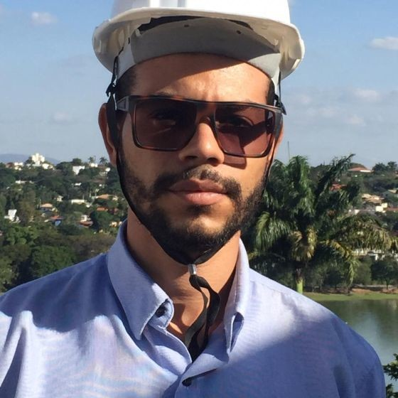

Formação

Engenharia Elétrica: Faculdade Pitágoras Antônio Carlos. Formado: junho de 2020.
Especialização Técnica: Instrumentação e Controle de Processos Industriais.
SENAI - FIEMG – Campos CETEL, bairro Horto. Concluído junho/2015.
Curso técnico: Médio (2° grau): Curso Técnico em Eletrotécnica, SENAI - FIEMG – Campos CETEL, bairro Horto. Concluído dezembro/2014.
Escolaridade: Ensino Médio (2° Grau) completo.